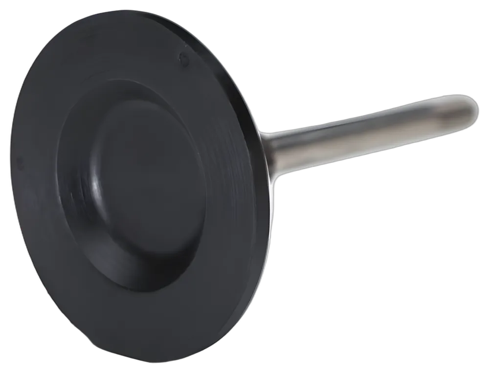

The poppet
More than 80 years ago, Strataflo developed a rubber poppet that eliminated the need for O-rings. The patented design fully molds rubber over a solid steel insert, a strong seal that has proven itself ever since.
It is the defining innovation in the company's history, and it is used in every standard check and foot valve, including the Strataflo Fusion™ line.